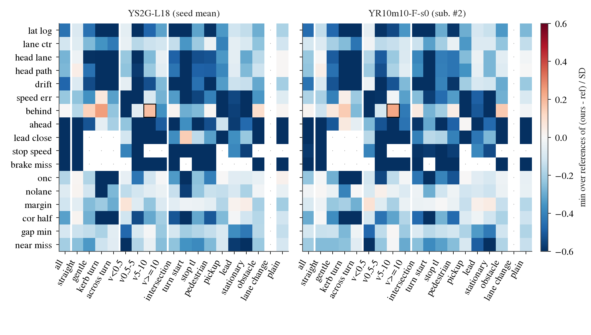
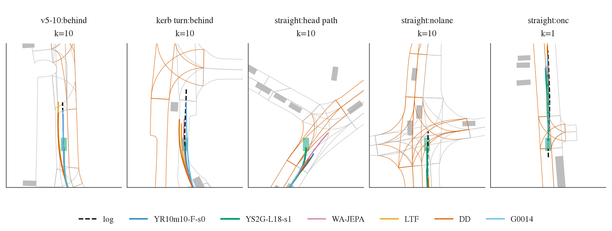

只用已存的东西、只用 CPU：控制器每 0.1 秒的后轴位姿与速度、评估器每 0.5 秒的序列、模拟器自己的场景加载器给出的日志路径、带行驶方向的车道多边形、回放的他车（只有车辆）。
十个检查点各一个回合：我们的 YR10m10-F-s0、YS2G-L18 两 seed、YS-L18 两 seed、APY（只描述），参考 WA-JEPA、LTF、DD、G0014。每个回合在评估器截断前的决策上算量，先在场景内平均，再在格内对场景平均。
“缺口”是 driver 减人类日志（车道边距、最近车距反过来，越大越差）。格 = 一个量 × 一个场景分组：转弯几何（直行、缓弯、靠路沿转弯、横穿对向转弯）、起始速度四档、nuPlan 原始日志里的场景标签十族（路口、起步转弯、停止线 / 红绿灯、行人、上下客区、跟车、静止、障碍、变道、无标签）。
判据 m* = 四个参考里“我们 − 参考”的最小值（按场景配对）；按日志聚类 bootstrap（10 000 次）的 2.5% 分位 > 0 就是旗标。预登记在任何读数前提交（experiments/cap_audit/plans/2026-10-12-cap-audit-prereg.md，f9981841）。
闸全过：每个检查点 1479 / 1479 个回合都有评估器序列和控制器位姿；自算横向偏差与评估器在 96.7% 的决策上差 ≤ 0.1 米（第一次 0.856，原因是评估器量车身质心、我们量后轴，读数前改了尺子，见补记 1）； 自算最近车距与评估器 Spearman 0.990；日志自己 99.5% 在同向车道、0.4% 在对向车道；1491 个场景里 1457 个有场景标签。
| 检查点 | 分组 | 量 | m* [95% CI] | 只看都活下来的场景 | 18 决策 held | 归类 | 杠杆 |
|---|---|---|---|---|---|---|---|
| YR10m10-F-s0 | 起始 5–10 米/秒（714 场景） | 落后人类（米） | +0.774 [+0.377, +1.190] | +0.675 成立 | +0.710 | 纵向 | 新标签课 L |
| YS2G | 起始 5–10 米/秒 | 落后人类 | +0.593 [+0.217, +0.972] | +0.554 成立 | +1.244 | 纵向 | 新标签课 L |
| YS-L18 | 起始 5–10 米/秒 | 落后人类 | +0.590 [+0.214, +0.971] | +0.531 成立 | +1.064 | 纵向 | 新标签课 L |
| YS-L18 | 靠路沿转弯（113） | 落后人类 | +1.210 [+0.308, +2.031] | +0.343 不成立 | +1.181 | 纵向 | 新标签课 L |
| YS-L18 | 直行（1070） | 对日志路径的航向误差（度） | +0.263 [+0.104, +0.362] | +0.253 成立 | +0.232 | 感知 | 感知侧修法 |
每行 287 个可判格（≥ 30 个场景、≥ 10 个日志），没有一格的 bootstrap z 超过 3.75（约为格数的 Bonferroni）。数字来源：experiments/cap_audit/results/cap_report.md、flags.csv。
落后到底是什么。起始 5–10 米/秒的场景上，有符号速度差（driver − 人）YR −0.91、YS2G −0.87 米/秒，参考 WA-JEPA −0.73、garage −0.53，两个样例反而偏快（+0.23、+0.12）；5 秒后我们落后人类 4.1–4.2 米，WA-JEPA 3.5、garage 2.8、LTF 1.7、DD 1.8。 全部场景上我们落后 3.1 米，garage 也是 3.1，所以这一格不旗标；我们自己家族的 APY 只落后 2.2 米。也就是说：不是哪个场景特有，而是巡航速度整体偏低，在中速巡航上最明显。 注意第 252 条：在 navtest 上把速度一刀切调快不净正（快 5% 新增碰撞），所以 L 课的速度项要随场景条件化，不能是常数增益。
直行航向这一格。只有 YS-L18 有，YS2G（+0.125，区间含 0）和 YR（+0.106）都没有。按登记规则归感知：这些场景的 held 直行决策上，出厂车道线头 20 米处的车道边界误差中位 0.62 米、两条线都在的比例 0.15（第 272 条的线是 0.30 米、0.80）， 而 serving 没有异常（规划对执行 1 秒处 0.075 米，全体 0.074）。这条规则在直行上很宽：第 272 条已知眼睛在所有直行决策上都差，所以任何直行横向格都会被归到感知。

| 量 | YS2G | YR | 参考范围 |
|---|---|---|---|
| 对日志路径横向偏差（米） | 0.27 | 0.26 | 0.32–0.45 |
| 对日志路径航向误差（度） | 2.0 | 2.1 | 2.2–2.8 |
| 漂移斜率（米 / 决策） | 0.073 | 0.077 | 0.10–0.14 |
| 用掉一半走廊（≥ 2 米）的场景比例 | 0.078 | 0.087 | 0.10–0.18 |
| 速度误差 |Δv|（米/秒） | 0.89 | 0.92 | 0.87–1.04 |
| 人停住时我们的速度（米/秒） | 0.51 | 0.53 | 0.49–0.93 |
| 人刹车时少刹的量（米/秒） | 0.22 | 0.24 | 0.36–0.77 |
| 5 秒后落后人类（米） | 3.1 | 3.1 | 2.0–3.1 |
最大的绝对缺口仍在转弯：横穿对向转弯横向 0.45 米、13% 的场景用掉一半走廊、航向 3.2 度；靠路沿转弯 0.39 米、13%、3.4 度。这些格我们比参考好，但它们是 private 上最可能变成零分的“退化但活下来”。

$DATA_DIR/runs/cap_audit/collect-pub/20261012-182318/、collect-held/20261012-182423/（逐决策 parquet、鸟瞰图数据）；代码 experiments/cap_audit/scripts/ca.py、ca_report.py；决策条目 research/decisions/278.md。